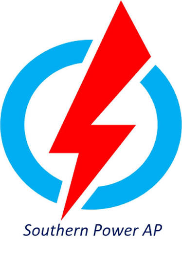

Namaste, I'm
Chavali Uddipa Dattudu
ECE Undergraduate · VLSI · RFIC · Analog IC Design
Electronics and Communication Engineering undergraduate focused on VLSI, RF CMOS IC Design and Analog IC Design , with hands-on experience in transistor-level design, Cadence Virtuoso, SPICE simulation and EDA automation.

Focus
VLSI / RFIC
Recruiter Snapshot
The essentials for a quick first look.
About Me
Building toward semiconductor design.
I am an Electronics and Communication Engineering undergraduate building a strong foundation in VLSI, RF CMOS IC Design and analog circuit design.
My work spans transistor-level circuit design, RF front-end blocks, memory circuits, SPICE simulation and EDA automation.
I am particularly interested in semiconductor design where device physics, circuit architecture and simulation discipline meet.
Technical profile
IC Design
Analog VLSI · RF CMOS · SRAM · LNA · Transistor-level design
EDA & Simulation
Cadence Virtuoso · NGSPICE · MATLAB · NI Multisim
Programming / HDL
Python · Verilog HDL · C · Pandas · Matplotlib
Hardware
Altium Designer · PCB design · practical electronics
Experience & Research
Hands-on semiconductor design experience with an emphasis on RF and analog integrated circuits.
Research Internship · Present
July 2026 — Present
National Institute of Technology Calicut
Analog IC Design for CMOS Image Sensors
- Collaborating on Programmable Gain Amplifiers (PGAs) and Single-Slope ADCs for CMOS camera image sensors.
- Performing transistor-level modeling and simulation of converter blocks to study gain, noise and power.
- Focusing on analog front-end and data-conversion behavior for high-resolution imaging applications.
- Working under Dr. Bhuvan B on ongoing Analog IC Design research.
Summer Research Internship
May 2026 — July 2026
National Institute of Technology Calicut
RFIC Design for Anti-Drone Radar
- Designed and simulated a 9 GHz cascode Low Noise Amplifier in 180nm CMOS using Cadence Virtuoso for an X-band radar receiver front-end.
- Implemented an active LC output matching network and multi-finger transistor topology for 50 Ω impedance matching and stability.
- Verified S11, S22, S21, noise figure, DC operating point and overall RF performance.
- Achieved 11.06 dB gain, 1.41 dB NF, −17.06 dB S11, −23.27 dB S22, 14.13 mW DC power and 21.05 GHz/mW FoM.
Internship Certificate
NIT Calicut — Completion Certificate

Industrial Training · Telecom / Networking
May 2024 — Nov 2024
Southern Power Distribution Company of A.P. Ltd. (APSPDCL)
Network Intern — Telecom Department
- Completed six months of industrial training in telecommunications and networking at the APSPDCL Kadapa office.
- Worked around enterprise network hardware and telecom infrastructure, including routers, switches and network setups.
- Gained hands-on exposure to Cat6 termination, keystone connections and physical network infrastructure.
- Observed troubleshooting of fibre-optic links and day-to-day telecom/networking operations.
Industrial Training Certificate
APSPDCL Industrial Training Certificate
Engineering Projects
Real schematics, simulation plots and hardware designs — presented as engineering proof.
Showing all engineering projects.


9 GHz CMOS Low Noise Amplifier
Unconditionally stable cascode LNA for an X-band radar receiver, with active LC matching and multi-finger transistor implementation.
Technical details
Objective: Stable X-band amplification with low noise and 50 Ω matching.
Architecture: Cascode LNA with active LC output matching and multi-finger transistor implementation.
Verification: S11, S22, S21, noise figure, stability and DC operating point.
11.06 dB
Gain
1.41 dB
NF
-17.06 dB
S11
-23.27 dB
S22


180nm 6T SRAM Cell Design
Designed and characterized a six-transistor SRAM cell, evaluating read stability, write behavior and dynamic timing.
Technical details
Objective: Balance read/write stability with low-power operation.
Architecture: 6T SRAM in 180nm CMOS with optimized cell and pull-up ratios.
Verification: VTC, Seevinck read SNM and transient timing analysis.
Result: 309.0 mV read SNM and 86.39 µW dynamic power.
309.0 mV
Read Static Noise Margin
View Repository ↗
.webp)
Automated CMOS Inverter Characterization
Repeatable 180 nm PMOS/NMOS width-sweep characterization with automated VTC extraction.
Automated netlist generation, NGSPICE batch simulation, transistor-width sweeps, raw-data parsing and VTC visualization.
Technical details
Objective: Replace repetitive GUI sweeps with a reproducible batch characterization flow.
Implementation: Python generates SPICE netlists and automates transistor-width sweeps while NGSPICE runs headlessly.
Verification: Raw-output parsing, VTC extraction and automated Matplotlib visualization.


Dual-Input LiPo Battery Charger
Two-layer charger PCB with Micro-USB and DC barrel-jack inputs, OR-ing protection, selectable charging current and thermal-aware layout.
Technical details
Objective: Build a compact dual-input charger with safe power-path selection.
Implementation: 2-layer Altium PCB with Micro-USB and DC barrel-jack inputs, OR-ing protection, thick power traces and selectable charge current.
Verification: 3D clearance checks, silkscreen review, grounding and thermal considerations.
2-Layer
Custom PCB Design
View Repository ↗
Academic Background
2025 — 2028
 9.37 CGPA
9.37 CGPA
B.Tech — Electronics & Communication Engineering
Madanapalle Institute of Technology and Science
Expected graduation: May 2028
2022 — 2025
 95.15% · First Class
95.15% · First Class
Diploma — Electronics & Communication Engineering
ESC Government Polytechnic College
Academic Pathway
Diploma → B.Tech through lateral entry
After completing the 3-year Diploma in Electronics & Communication Engineering, I entered the B.Tech ECE programme through lateral entry directly into the second year.
Credentials & Technical Learning
Verified certificates and technical training.
Certificate of Participation
VLSI for Beginners
NIELIT Calicut · Aug 2026
Technical Training
VLSI Design using eSim & Open PDKs
FOSSEE Project, IIT Bombay · 26–29 Jun 2026
NPTEL Elite · Top 1%
Understanding Incubation and Entrepreneurship
IIT Bombay · Jan–Apr 2026
NPTEL Elite
Introduction on Intellectual Property to Engineers and Technologists
IIT Kharagpur · Jan–Mar 2026
NPTEL Elite
Technical Communication for Engineers
IIT Roorkee · Jul–Aug 2025
Add-on Skill Course
Internet of Things (IoT)
ESC Government Polytechnic · 2024–25
Technical Exposure
Independent study, seminars and technical talks.
Radio-Frequency Integrated Circuits
NPTEL / IIT Kanpur · July 2026 – Present
VLSI Testing and Physical Design
MITS ISTE Student Chapter · February 2026
VLSI and Electromagnetic Industry Practices
MITS IETE Students Forum · February 2026
India’s Semiconductor Revolution & VLSI
MITS Alumni Association · August 2025
Achievements & Recognition
Technical competitions, innovation challenges and academic recognition.


1st Prize · ₹25,000
Innovation Nexus 2026 Hackathon
MITS · PathVision & IITNFiF
1st place among 50 teams in a 16-hour hackathon. Developed a real-time agricultural transport condition monitoring system.

2nd Position
Circuit Detective — ECLECTICA 2K26
Madapalle Institute of Technology and Science · National Symposium.
.webp)
Academic Excellence
5th Semester Academic Excellence
ESC Government Polytechnic College.

1st Prize
Circuit Hunt
E-Merge 2K24 · JNTUACEA.

1st Prize
Technical Quiz
E-Merge 2K24 · JNTUACEA.
.webp)
Academic Excellence
4th Semester Academic Excellence
ESC Government Polytechnic College.

1st Prize · ₹1,000
Paper Presentation — PRAVAHA
Ripple National Symposium · RGM College of Engineering, Nandyal.
1.webp)
Academic Excellence
3rd Semester Academic Excellence
ESC Government Polytechnic College.
2.webp)
Academic Evidence
3rd Semester Recognition — Evidence
Second supporting photograph for the same academic recognition.

1st Place
Independence Day Quiz
Campus quiz competition winner.

2nd Place
Republic Day Quiz
Campus quiz competition recognition.
Let’s work together.
Open to VLSI/RFIC internships, semiconductor research and technical collaboration.
chavaliuddipadattudu@gmail.com ↗